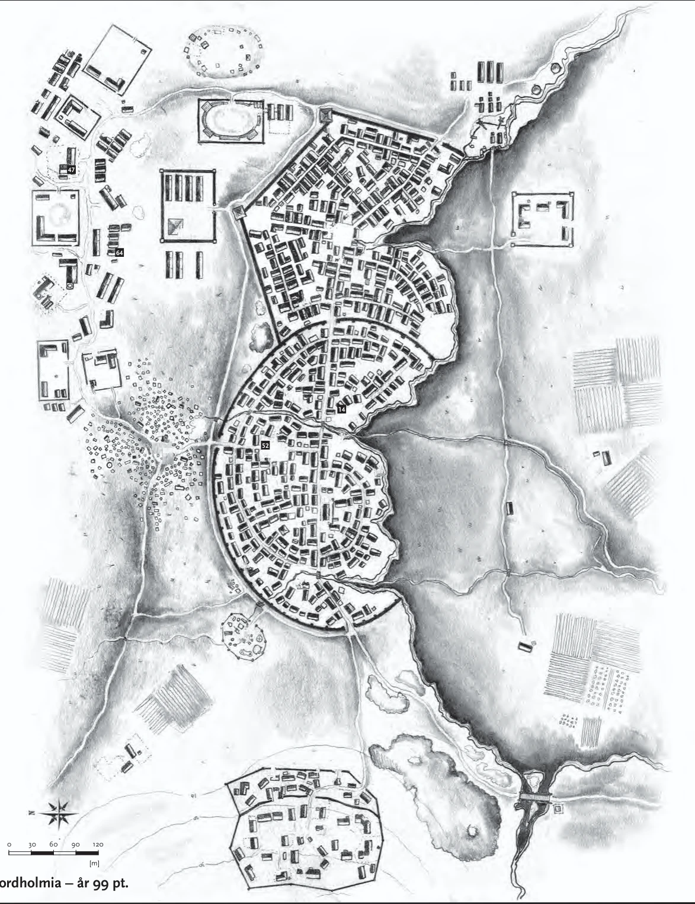

Platser Mutant: Undergångens Arvtagare Nordholmia: Kaisers testamente
- Citerat ur en bok
- Rättat ur en bok eller en persons text
- Skrivet av en person
- Skrivet av en modell
Nordholmia
Nybyggarstad och Pyrisamfundets nordligaste utpost, präglad av bolagen
Nordholmia är en stad och Pyrisamfundets nordligaste utpost. Den är ett livfullt nybyggarsamhälle på en slätt norr om Domsjöbotten, där bolag och herrskapsfolk exploaterar naturens rikedomar.3
Nordholmia, huvudort i den ogästvänliga region som kallas Nödgötalandet, har cirka 12 000 registrerade invånare i vuxen ålder. Stadens viktigaste utkomst kommer från uppodlingen av den fantastiskt bördiga Domsjöbotten och genom tillverkningen av olika träprodukter. Stora inkomster skördas också på handel med fyndigheter som insamlats från Norra Ödemarkernas vidsträckta skogsområden.5
Historia
För ett sekel sedan fanns bara ödemark på den plats där Nordholmia nu ligger. Några enstaka fribyggare levde i ensamhet av det som områdets infertila jord kunde frambringa och kringdragande nomader stannade till då och då för att sedan snabbt resa vidare.3
Nordholmias historia är fram till en viss punkt illustrativ för många inlandssamhällen kring Skandiska bergen. Byn uppkom genom att ett fåtal familjer slog sig samman, till skydd mot odjur och natur.5 Nomader kom på besök några gånger per år, men i övrigt var kontakten med omkringliggande samhällena obefintlig.5 Det var först när man upptäckte den oerhörda potens som jorden i Domsjöbotten besatt som Nordholmia började utmärka sig från andra inlandsbyar.4 Historien säger att det var den driftige och dådkraftige fribyggaren Tore Bonner som upptäckte vilken fantastisk växtkraft marken besatt i den djupa och vidsträckta sänka som kallas Domsjöbotten.3
Jordens fantastiska avkastning producerade ett överflöd vilket lämnade utrymme för andra aktiviteter än födoanskaffning såsom fritid och ökad handel.4 Fritiden användes till att förfina jordbruksredskap, uppfinna nya förädlingsformer för råvarorna och till att ströva i markerna på jakt efter fornfynd.4 Ganska snabbt växte tätorten till att omfatta drygt femtio hushåll, och ytterligare bosättningar slog rot bland odlingar i Domsjöbotten. Men framgången hade också ett pris.4 Den gav upphov till girighet och konflikter om äganderätten över de bästa markerna.4 I konflikternas centrum stod den gamla familjen Bonner och nykomlingarna Grabbe, och de ledde till kriget mellan Bonnermän och Grabbar, som började år 29 pt. när Olivia Grabbe slöt ett avtal med kejsar Elmer Skarprättare. Kriget slutade med att den unge Tore Bonner blev regionens nya storman, vilket väckte optimism vid hovet i Hindenburg.4
Men glädjen kom till en början av sig, då herr Bonner tycktes lika ointresserad av samarbete som den tidigare regimen varit. Under en kort period förvisades alla kejsarens sändebud från regionen och situationen var mycket spänd. Dock ordnades allting till det bästa för nordholmierna.6 Snart nådde nyheten kejsar Elmer Skarprättare som år 32 pt. inlemmade Nordholmiaområdet i sitt rike och gav herr Bonner äganderätten till stora delar av odlingsmarken.3
Inlemmandet sågs positivt av de flesta, då den pyriska armén erbjöd ännu bättre skydd mot den ogästvänliga vildmarkens styggelser än vad nordholmierna själva mäktade med.7 I och med detta inleddes också en snabb tillväxtperiod.6
På bara ett år tiodubblades befolkningen till nära femhundra själar och flera manufakturer blommade upp för att ta vara på både naturfyndigheter och fornlämningar.6 Dessutom blev staden snart basläger för Norra Gränsbataljonen, med sina nära sexhundra militärer.6 I takt med att stadens omnejd kultiverades blev området säkrare och allt fler resursstarka personer tog risken att satsa pengar och tid i nya projekt i Nordholmiaregionen.6 Under sommaren 35 pt. besöktes området av kejsaren själv, vilken framförallt imponerades av odlingsmarkernas snabba och ymniga avkastning.6
Sedan fick tillväxten fart på allvar.6 Från och med år 42 pt. genomgick området en veritabel befolkningsexplosion eftersom viktiga infrastrukturella faktorer tillkom. Dels invigdes Nordhamns kaj på våren och på hösten öppnade det högeffektiva sågverket Norrsågen sina portar. Gryningsandan vaknade till liv på allvar och under några år var befolkningsökningen i Nordholmia till och med större än huvudstadens. Vid denna tidpunkt var det mer eller mindre ett modenyck bland Hindenburgs aristokrati att investera i Nödgötalandet. Snart sagt alla större släkter hittade någon slags nisch att specialisera sig på, och även om merparten förlorade sina satsade krediter betydde de enormt mycket för regionens tillväxt.6
Bortsett från ett antal små incidenter präglas Nordholmias fortsatta historia av intern fred och sämja, något som vissa kopplar till Gryningsandan och andra härleder till regionens utsatta läge. Situationen blev i och för sig en smula oroligare när familjen Fallk år 70 pt. anlände, från sin tidigare bostadsort Pirit. Då dessa mycket snabbt lade beslag på goda odlingsmarker, lockades andra framstående familjer till misstänksamhet och stundvisa vredesutbrott – något som framför allt gällde familjen Båsse. De senare gick till och med så långt att de anklagade familjen Fallk för att vara inblandade i ”den blodiga festivalen” år 72 pt., då organisationen Järnringen smugglade in en mängd terrorrobotar i staden mitt under pågående Klang- och Jubelfestival. Men trots att spänningen mellan Fallk och Båsse bara ökat med åren måste man ändå säga att Nordholmia är en förhållandevis trivsam plats att leva och verka i.6
Detta gäller i ännu högre utsträckning sedan Jånni Rio kom till stan. Det var under en synnerligen het sommardag år 84 pt. som han kom ridande längs huvudgatan Bonnerstråket på sin mäktiga pansár Malifezor. Åtta timmar senare hade han övertalat guvernören att tillsätta honom som miliskapten och sedan dess har Nordholmias tätort varit nästan helt förskonad från bråk och bus med dödsbringande utgång.6 Den forne skultryttaren – med sin bredbrättade hatt, sina kläder av ulkskinn och sina trogna enskjutare vid sidan – personifierar mer eller mindre lugnet i dagens Nordholmia.6 Hans betydelse går inte att överskatta. Som ordstävet lyder: ”Först kom gränsbataljonen, sedan kom Gryningsandan och därefter anlände Jånni Rio”.6
Från den händelsen har det nu vuxit fram ett livfullt nybyggarsamhälle, där bolag och herrskapsfolk investerat enorma resurser i hopp om att utvinna ännu större rikedomar. Förutom odlingsmarken exploaterar man skogen, mossarna, bergen och jaktmöjligheterna till det yttersta, och som om detta inte vore nog upptäckte den tidigare medellöse äventyraren Gilmer Skerping för något år sedan en källa vars vatten påstås bota sjukdomar och fördröja åldrande.3
Geografi
Staden Nordholmia ligger belägen på en slätt norr om Domsjöbotten, vilken allmänt antas vara en krater orsakad av forntidens stenregn. Boningshusen liksom stadskärnans butiker och restauranger är mestadels byggda i trä, medan bolagens lokaler uppförts i tegel och sten. De senare är förlagda en bit ifrån själva stadskärnan, för att förskona den från röken och nedfallet ur manufakturernas skorstenar.3
Bolagen strider om att suga ut den omkringliggande naturen så mycket som möjligt, på så kort tid det bara går. Och eftersom nästan alla av de drygt 12 000 bofasta nordholmierna har band till något bolag är alla indragna i denna strid. Än så länge finns dock ingen bitterhet med i spelet. Man kan glädjas åt varandras framgångar, dels eftersom bolagen är hårt nischade och därför inte konkurrerar med varandra, dels på grund av att alla gör goda vinster och expanderar sin verksamhet. Visst förekommer en del arga ordväxlingar och krogslagsmål mellan representanter för de olika handelshusen, men dessa har som regel lite att göra med själva verksamheten utan är i stället orsakade av överförfriskning, spelskulder eller kärleksdramer.3
Livet i Nordholmia är hårt och strängt. Många av de bekvämligheter och nöjen som finns i Hindenburg saknas ännu hos nybyggarna, även om man gör sitt bästa för att efterlikna huvudstaden. Idéer finns om att bygga såväl en teater som en arena, och många har uttryckt önskemål om att etablera en omfattande casinoverksamhet i tätorten. Men för tillfället finns inte mycket annat än restaurangerna att glädjas åt. Visst har dessa någon form av hasardspel inrymt i sina lokaler, och nog kan där förekomma ett eller annat skådespel, men den huvudsakliga sysslan består i att dricka enorma mängder tokjos och skryta om dagens arbete. Undantaget från detta är Nordholmias finaste restaurang, Skansen.3
Nordholmia är dock inte bara bolag och manufakturer. Som Pyrisamfundets nordligaste utpost besöks staden alltid av äventyrare och lycksökare, vilka ägnar all sin tid åt att sondera de norra ödemarkerna efter ädelmetall och fornfynd. Vid midsommar varje år är det extra trångt på ortens nio hotell och pensionat, eftersom nordholmierna då firar sin Klang & Jubelfestival – en vecka fylld av handel, musik, dans och tokgröning i floder.3 Även om antalet tillfälliga invånare, i form av äventyrare, sakletare och kunskapare, är mindre än i Pirit, bebos Nordholmia vid ett givet tillfälle av närmare tjugotusen personer.5 Och i samband med midsommarens Klang- och Jubelfestival är de tillfälliga besökarna ännu fler.5
Gryningsandan
Det var i Nordholmia som Gryningsandan väcktes och blev en förenande kraft i Pyrisamfundet. Genom Gryningsandan och dess löfte om en blomstrande framtid har den aristokratiska eliten och knegarmassorna fått något gemensamt att sträva mot – en lysande tid som skall förpassa minnet av vildmarkslivets många vedermödor i glömska och för evigt utestänga sjukdom, armod och mörker.4 Den har ännu inte på allvar fått grepp om Hindenburg och Pirit, men för folket i Nordholmia tycks gryningen närma sig steg för steg.4 Och med den kommer ett löfte, som hörsammas av även de allra eländigaste själar: ”Om du vågar och vill kan din framtids dagar komma att bada i flödande solsken!”5
Med detta inte sagt att Gryningsandan tar udden av alla former av konflikter, bara att överseendet med olikheter och åsiktsskillnader är större när gemensamma ansträngningar utpekats som vägen till framgång.5 I vissa fall kan konflikter inte undvikas och av någon anledning tycks de alltid få mycket våldsamma följder i Nordholmia.5 Kanske beror det på att det endast är de allra starkaste spänningarna som blir till föremål för verkliga konfl ikter, kanske beror det på att stadsborna passar på att ta ut alla sina aggressioner när de väl får chansen.5 Var orsaken än står att finna har samfundets norra utpost skakats av flertalet våldsamma stridigheter under sin historia som pyrisk koloni – från kraftmätningen mellan Bonnermän och Grabbar, till dagens fejd mellan släktena Fallk och Båsse.5 Och frågan är om inte konkurrensen, och med den konflikterna, kan komma att bli fler och fler i takt med att solen stiger över de lyckligt lottade medan flertalet lämnas i skugga.5
Konflikter
Bland de fåtaliga orosmoment som påverkar livet i Nordholmia utmärker sig tre konflikter.8 Av dessa är osämjan mellan familjerna Fallk och Båsse den mest svårartade.8
En annan konfl ikt som upptar nordholmiernas intresse är den prestigekamp som pågår mellan Wolfram Bonners söner Stjoart, Flåjd och Tim å ena sidan, och bröderna Troy, Hoyt och Trent Nidelacker å den andra. Osämjan är i hög grad knuten till två distinkta ungdomsgäng, för vilka de två trojkorna fungerar som informella ledare. Den ena falangen består av barn till huvudsakligen mänskliga handelsmän och högre administratörer, medan den andra utgörs av ungdomar med knegarbakgrund. Vanligtvis håller grupperna till i olika delar av staden – människorna på Vita Berget och knegarna kring Timmerstugan i Elderstaden – varför direkta konfrontationer tillhör sällsyntheterna.8
Men vid större festligheter och festivaler, samt de gånger då gängen får för sig att bevista tivolit samma kväll, händer det att våldsamheter uppstår med blodspillan som följd. Knegarungdomarna har nämligen för vana att vid dylika tillfällen anlägga ett synnerligen provokativt sätt, vilket lockar människobarnen till vrede. Ja, så brukar det i alla fall heta i milisrapporterna och i de nummer av Nordholmiaposten som rapporterar om händelserna.8
Under Gryningsandans blanka yta döljer sig en och annan konflikt rörande affärer och politik.8 Den tydligaste är den som står mellan olika typer av fraktbolag; mer precist mellan karavanföretagare och skeppare. Nu när en vattenväg öppnats mellan Nordholmia och Pirit har konkurrensen mellan dessa ställts på sin spets, och anklagelserna om sabotageverksamhet är många.8 Bland annat påstår karavanföretagarna att skepparna anställer banditband att överfalla deras transporter, medan de senare hävdar att de förstnämnda anlitar flodpirater i sin tjänst.8
Styre och ledning
Mycket av makten över Nordholmia utövas i själva verket av stadens borgmästare, vilken alltid varit en Bonner, varför guvernörens främsta uppgift är av kontrollerande och rapporterande slag.8
Guvernör i Nordholmia är Yulia Wrede.9
Vid sin sida har guvernören polischeffen Roland Gaross, handelscheffen Rigmor Eidelbjär, den militäre regioncheffen Emrik Granat samt stadscheffen Heding Bonner. Den förstnämnde fungerar som högste befäl för ordningsmakten i staden och påstås samarbeta mycket bra med sin underlydande sheriff, medan fru Eidelbjär har till uppgift att koordinera insamlandet av regionens skatter och i övrigt sköta ärenden av ekonomisk karaktär. Herr Granat är yngre broder till rikets arméchef och en riktig vildhjärna, som enligt rykten ivrar för nya krig varje vecka – till såväl centralmaktens som de lokala generalernas förtret. Den sistnämnde har egentligen ganska få formella uppgifter men ansvarar för relationen mellan kejsarmakten och borgmästaren. Detta betyder inte minst en lång rad bjudningar och middagar hemma hos borgmästarfamiljen.8
De fl esta som lever och verkar i Nordholmia är överens om att Wolfram Bonner och dennes företrädare på borgmästartronen är och har varit stadens verkliga styresmän.8 Visst finns ett fåtal dysterläppar som är övertygade om att det ändå är kejsaren som slutligen bestämmer, men dessa har uppenbarligen inte förstått vad Gryningsandan handlar om – om vilja och initiativkraft som måste komma från folket ute i rikets alla regioner.8
Andra maktfraktioner
Förutom stadens formella ledare finns ett flertal personer och falanger som har betydande makt.10 En av privatpersonerna är förstås Jånni Rio – Nordholmias sheriff och alla busars skräck. Han är stenhård i sin hållning att nedslå varje form av våld, stöld eller vandalism som stör friden för invånarna och är därtill närmast hjälteförklarad på grund av sina träffsäkra och trogna enskjutare.10
En annan betydelsefull maktgrupp är bolagsledarna.11 Det är i och för sig ytterst sällan som dessa finner någon anledning att sätta sig upp mot borgmästaren, vilken som bekant är bolagschef själv.11 Men om det behövdes skulle de definitivt ha makten att utöva ett stort inflytande. Det är bolagen som leder Nordholmia framåt, och försöker någon sätta käppar i deras hjul kan vägen mot framtida lycka och välgång visa sig närmast oframkomlig.11
Militär
Militären har i Nordholmia fullt upp med att bevaka gränsen och blandar sig därför mycket sällan i stadens sociala och politiska liv. Hindenburg har sin Musközon och Pirit sitt Frihetens Slätter, men vad är detta mot farligheterna från Norra ödemarkerna och Västra Utmarkseländet?11
Garnisonsområdet inne i tätorten är omringat av en kraftig och högrest stenmur. Nio meter hög och överdragen med slätspacklad cement är den ett imponerande bygge.12 Inne på gården finns dels en fyra våningar hög stabsbyggnad samt ett antal baracker inrymmande soldatkvarter och förvaringsutrymmen.12 Två förläggningslängor har därtill fått byggas utanför murarna, då storleken på den arméfraktion som stationerats i staden vuxit sig allt större med åren. I tätorten huserar Nordholmia Stadskompani och specialförbandet Jägarna. Dessutom tillåts de invånare som för tillfället har milistjänstgöring att sova i arméns förläggning – något som särskilt är populärt bland ungdomar och verkstadens trångbodda befolkning.12
Stadsdelar
Huvudartiklar: Verkstaden, Dixiland, Elderstaden, Nya Haga, Vita Berget
Nordholmias stadsdelar är så utspridda att många tänker på dem som olika orter. De är därtill väldigt olikartade till sin karaktär, nästan så att man kan säga att de kännetecknas av skilda kulturer. Med vissa undantag karaktäriseras distrikten av skilda vanor och smak vad gäller underhållning, mat, kläder med mera. Detta hänger förstås till stor del ihop med skillnader i vilka folkgrupper som bebor respektive stadsdel – arbetarna i Verkstaden, daglönarna i Dixiland, näringsidkarna i Elderstaden, administratörerna i Nya Haga och pamparna på Vita Berget.11
I och för sig kan man se snarlika grupperingar av boende i Hindenburg och Pirit, men skillnaderna i Nordholmia accentueras, förmodligen på grund av de geografi ska avstånden områdena emellan.11
Levnadsstandarden varierar förstås också mellan stadsdelarna – skillnaden mellan det i flera bemärkelser upplysta Vita Berget, med sina stenlagda gator och målade trähus, och den klunga av skjul som kallas Dixiland är enorm.11 Men trots dessa olikheter är Nordholmia betydligt mindre plågat av konfl ikter och osämja än rikets andra storstäder, något som beror på den gryningsanda som håller regionen i sitt grepp.11 Hur fattig och eländig en nordholmier än är finns det möjligheter för alla i gryningsvärldens snabba omkastningar.11
Restauranger
I Nordholmia, precis som i Hindenburg och Pirit, är matinrättningarna många och varierade till sin karaktär.13 Skillnaden mellan städerna består i de lokala influenser som uppblandar den traditionellt Pyriska matkulturen.13 Pirits restauranger har som bekant hämtat influenser från träskfolkets kryddvanor och åhlaköket på Frihetens slätter, medan Hindenburgs kokkonster till stor del präglas av närheten till havet och självfallet har olika typer av malrätter högt på menyn.13 I Nordholmia, å sin sida, äter man helst av allt rött kött, gärna grillat och i enorma portioner. Tillbehör som pärer, antipasto och varianter på lök nyttjas mycket sparsamt om alls.13 Snarare är det vanligare att vid sidan om köttstycket äta annat kött, i form av rökt knasfläsk eller rimmade fjädringslår.13
Nöjesinrättningar
Att leva i Nordholmia är för de flesta som att delta i en kapplöpningstävling där varje spadtag, varje fällt träd och varje hyvlad planka utgör ett steg närmare målet – ett mål som tycks förflytta sig bortåt lika snabbt som nordholmierna springer.14 Det är bolagen och deras verksamhet som utgör själva kärnan i Nordholmias atmosfär, genomsyrad av gryningsanda som den är. Bolagsägarna stoltserar med sina pekuniära rapporter och senaste innovationer, medan knegarna stoltserar med att de bidragit till verksamhetens framgång och livskraftighet. På grund av detta är Nordholmia den stad i Pyrisamfundet där såväl behovet som utbudet av nöjen och förströelser är minst.14 De flesta nöjer sig med att varva ned på den lokala krogen eller vid salutorgets doggmoj, innan de vandrar hem till sängen för att drömma om morgondagens knog.14 Undantaget är lördagskvällarna och söndagarna. Det är då befolkningen slappnar av och tillåter sig att skratta.14
Gästgiverier
Sammanlagt är de flera tusen, de förhoppningsfulla skrotletare som inleder och avslutar sina expeditioner i Pyrisamfundets norra makt- och handelscentrum.15 Dessa befinner sig oftast i vildmarken varför sällan mer än tvåtusen av dem befinner sig i staden vid en given tidpunkt.15 Väl där tar de dock gärna in på något av stadens gästgiverier – om inte den senaste utfärden varit resultatlös förstås. Med anledning av detta är det mycket svårt att hitta någon sängplats att hyra i tätorten. Mitt i vintern och kring festivalen vid midsommar är det närmast omöjligt. För den som misslyckas återstår att fråga runt efter rum att hyra eller att slå upp ett eget tält bland Dixilands ruckel.15
Butiker
Hantverkare, återförsäljare, speceri- och antikaffärer kantar huvudgatorna i såväl Elderstaden som Nya Haga.15 Allt man kan få tag på i Hindenburg och Pirit finns också till försäljning där.15 Hantverksstilen är visserligen en annan – enklare, mer robust och ändamålsenlig – men det är inget fel på skickligheten hos hantverkarna i norr. Vad gäller återförsäljarna hämtar de mycket från traktens bolag, men självfallet importeras en hel del från hindenburgregionen på grund av att många invånare kommer därifrån.15
Kunskap och information
Nordholmias stora nyhetskanal är tidskriften Nordholmiaposten, vilken läses av hög som låg. Finfolket på Vita Berget brukar komplettera läsningen av denna med importerade nummer av Imperiets Röst eller Polisgazetten. I övrigt är det här med kunskap och information inte något som är särdeles eftertraktat bland invånarna i allmänhet.16 Huvudsaken är att de vet att det går bra för det bolag eller den hantverksfirma de arbetar för och att inte priserna på krogen skjuter i höjden.16 Följaktligen är det lite si och så med läskunnigheten. Mycket få som inte äger eller driver en affärsrörelse, alternativt innehar ett arbete som innefattar skriftliga order, kan läsa mer än sitt eget namn och devisen ”Vilja, rätt och mannamod”.16 I Nordholmia finns dock en veritabel guldgruva av information för den som vet var att leta och har de rätta kontakterna.16 Bland annat finns där ett omfattande stadsarkiv och Pyrisamfundets överlägset största samling forntida texter.16
Offentliga inrättningar
Av någon anledning har Nordholmia kommit att bli en plats dit flera riksangelägna institutioner förlagts.17 Förutom fängelset och asylet, återfinns också rikets största träningsanläggning för armérekryter och många samfundsägda manufakturer i staden.17 Vissa illvilliga tungor viskar att Nordholmia används som en avfallsstation, där de värsta brottslingarna och galningarna samt de mest besudlande manufakturerna hamnar. Kanske ligger det något i detta, men hur det än är med den saken har nordholmierna visat att de förmår hantera det ansvar dylika institutioner medför. Enligt rykten diskuteras därför att förlägga såväl ett behandlingshem för patienter med zonröta samt ett omskolningsinstitut för slöröksgalningar i tätorten.17
Bolagen
Huvudartikel: Domsjöbotten
Den viktigaste mannen i dagens Nordholmia är utan tvekan Wolfram Bonner. Han sitter som ordförande i tre bolagsstyrelser och har dessutom ärvt cirka en tredjedel av norra Domsjöbotten från sin farfar Tore. Bolagen han basar över – Kolkompaniet, Etanolium och Pappersbolaget – ägs av Hindenburgska herremän och sysslar med olika former av träförädling. Kolkompaniet milar kol ur den halvintelligenta och tämligen våldsamma skäggeken. Man har 130 anställda, varav hälften är milkarlar/lagerarbetare och hälften ingår i de avverkningspatruller som anskaffar timmer. Etanolium framställer sprit som används för att driva vissa fordonstyper och maskiner från den gamla tiden, medan Pappersbolaget tillverkar skrivpapper, kartong och en form av hygienartikel för underlivsbruk som blivit populär bland herrskapsfolk och näringsidkare.3
De enskilt största bolagen i Nordholmia är Förenade Timmerbolagen – som även det ägs av en Hindenburgbaserad kartell med Silvia Dufva i spetsen – samt Nordholmias smältverk, vilket specialiserat sig på att återanvända järn och stålskrot som insamlas i ödemarkerna. De senare har också en enhet robotjägare i sin tjänst, vilka ägnar sig åt att spåra upp och kortsluta robotar som sedan styckas och säljs. Dessa bolagsjättar har dock konkurrens av sågverket Norrsågen, vapentillverkaren Müllers samt av den koppargruva som nyligen upptäckts, en dryg dagsritt sydost om Nordholmias tätort.3
En annan lönande rörelse är förstås den spannmålsodling som bedrivs på fälten i Domsjöbotten. Utöver detta finns ett dussintal andra verksamheter som frodas i det sprudlande handelsklimatet. De tillverkar egna produkter som exempelvis målarfärg, koppartråd, torvbriketter och pälsverk eller fungerar som underleverantörer av emballage, verktyg, rep och annat som de större bolagen behöver för sin verksamhet. Snabbast växande av alla är den nystartade hälsodrycksproducenten Brusa, som skeppar hundratals tunnor vatten varje månad till Hindenburg och på export.18
Bolagen och deras manufakturer är Nordholmias verkliga hjärtepump.12 Arbetet hålls högt i ära och för merparten av invånarna är det viktigare att göra ett gott arbete än att ha gott om krediter på fickan eller intressanta fritidssysslor att ägna sig åt efter arbetsdagens slut.12 Det stora flertalet knorrar inte ens över att behöva jobba övertid, om det på ett eller annat sätt kan gagna verksamheten.12 Inte oväntat är därför invånarnas identitet till mycket stor del avhängig vilket bolag de arbetar åt.12 Vilket bolag en invånare arbetar åt tillmäts, kort sagt, större betydelse än dennes tillhörighet till kategorier som människa/mutant eller över-/underklass.12
Den enskildes kvaliteter som person är i hög grad knutna till hur det går för det bolag eller den hantverksfirma han eller hon knegar åt eller äger. Går det bra för rörelsen anses också den enskilde vara framgångsrik och duglig, och går det dåligt förlorar denne snabbt respekten från såväl grannar som bekanta.12
Som tur är går det bra för de flesta affärsverksamheter som trängs i staden och än så länge är det ovanligt med två konkurrerande producenter av samma produkt.12 Men frågan är hur det kommer att gå om det en dag uppstår en situation då bolagen tvingas rivalisera med varandra, och där en rörelses framgång är beroende av en annans fall. En sak är säker: det är först då det visar sig om Gryningsandan verkligen har den förenande kraft den tillskrivs.12
Fakta om Nordholmia
Guvernör: Yulia Wrede Polismästare: Roland Gaross Antal registrerade invånare: cirka 12 000 Antal invånare i snitt (inkl. besökare): cirka 20 000 Militär, sammanlagt: cirka 1 000 Norra gränsbataljonen: cirka 600 Stadskompaniet: cirka 200 Jägarkompani Nord: cirka 150 Antal milismän: cirka 120–200 Antal mord per år: cirka 80 Antal ouppklarade mord per år: cirka 20 Största manufaktur: Förenade timmerbolagen (470 anställda)9
- Mest exklusiva restaurang: Skansen9
- Mest exklusiva gästgiveri: Valentinos9
Karta

12345678910111213151617181920212223242526272829303132333435363738394041424344454648495051535455565758596061626365- 1 Burger Hind
- 2 Ellas doggmoj
- 3 Gårmetz
- 4 Knurras
- 5 Köttgrottan
- 6 Mynta Fallum
- 7 Rå Hajd
- 8 Skansen
- 9 Thepalatset
- 10 Timmerstugan
- 11 Tusentass
- 12 Töckners
- 13 Bongo
- 15 Rodéoarenan
- 16 Tivoli
- 17 Utomhusscen
- 18 Busters
- 19 Busters lyxby
- 20 Valentinos
- 21 Biblioteket
- 22 Djuraffär
- 23 Fru Soneras Kostymeri
- 24 Glyttes
- 25 Olivia Ollertz sparbank
- 26 Pulver & Pickert
- 27 Diligensstationen
- 28 Exploratorskontoret
- 29 Garnison
- 30 Guvernörspalatset
- 31 Miliskontoret
- 32 Nordholmiaanstalten
- 33 Riksasylet
- 34 Rådshuset
- 35 Sjukhuset
- 36 Stabsbyggnad
- 37 Stadsarkivet
- 38 Västra infarten
- 39 Östra infarten
- 40 Brusa
- 41 Båsse Torvfabrik
- 42 Etanolium
- 43 Förenade timmerbolagen
- 44 Sprängmedelsfabriken
- 45 Kolkompaniet
- 46 Lebenwalds tobak
- 48 Nordholmias smältverk
- 49 Norrsågen
- 50 Pappersbolaget
- 51 Ångmans
- 53 Brunnstorget
- 54 Eldertorget
- 55 Kantplatsen
- 56 Marknadstorget
- 57 Tores Torg
- 58 Salutorget
- 59 Bonners residens
- 60 Båsses residens
- 61 Chester Karltons hem
- 62 Chester Karltons kontor
- 63 Fallks residens
- 65 Zlips Klutterts hem
Ur boken
| Postryttare | 4 dagar |
| Karavan | 8 dagar |
| Heliograf | 2–12 timmar |
| Brevduva | 5–6 timmar |
Bilder
Kopplingar
◎ Visa i grafen- Del av
- Pyrisamfundet
- Omfattar
- Brusa, Busters lyxby, Dixiland, Elderstaden, Familjen Bonner, Familjen Båsse, Familjen Fallk, Familjen Grabbe, Familjen Päschon, Förenade timmerbolagen, Kriget mellan Bonnermän och Grabbar, Müllers vapenmanufaktur, Nordholmias smältverk, Norrsågen, Nya Haga, Olivia Ollertz sparbank, Rodéoarenan, Skansen, Tivoli, Verkstaden, Vita Berget
- Styrs av
- Wolfram Bonner, Yulia Wrede
- Tidigare: styrs av
- Elmer Skarprättare, Tore Bonner
- Huvudstad i
- Nödgötalandet
- Säte för
- Brusa, Familjen Bonner, Familjen Båsse, Familjen Fallk, Familjen Grabbe, Familjen Päschon, Förenade timmerbolagen, Müllers vapenmanufaktur, Nordholmias smältverk, Norra gränsbataljonen
- Tidigare: hem för
- Sigus Pöschel, Tore Bonner
- Förvarar
- Nordholmiaposten
- Nämns i
- Biblioteket, Blutvid Grönhanes köttgrotta, Busters, Diligensstationen, Dixistampers, Domsjöbotten, Domstolen, Ellas doggmoj, Elvira Päschon, Exploratorskontoret, Fabriksområdet, Familjen Schöld, Familjen Wrede, Fornfyndsauktion, Garnisonen, Gullspång, Gårmetz, Hedemora Hell, Hindenburg, Hotell Esplanad, Järnringen, Karle, Kirurgen, Knapperkulla, Kåkstaden, Logsta Bro, Lördagsfröjden, Manfred Lund, Milaskogen, Miliskontoret, Miranda Tulpaans djuraffär, Modus Marklund, Nordhamn, Norra ödemarkerna, Pirit, Polisgazetten, Riksasylet, Rådshuset, Silvia Dufva, Släkten Skarp, Stadsarkivet, Strandmarken, Svedala, Sywert Storch, Terrorrobot modell Hämnare, Timmerstugan, Trohult, Valentinos, Ödesvattnet, Ödmården, Östaden
- Nordholmia: Kaisers testamente, s. 5, 17.
- Nordholmia: Kaisers testamente, s. 5, 28; Mutant: Undergångens Arvtagare, s. 6.
- Mutant: Undergångens Arvtagare, s. 14.
- Nordholmia: Kaisers testamente, s. 3–4.
- Nordholmia: Kaisers testamente, s. 3.
- Nordholmia: Kaisers testamente, s. 4.
- Nordholmia: Kaisers testamente, s. 4; Mutant: Undergångens Arvtagare, s. 14.
- Nordholmia: Kaisers testamente, s. 5.
- Nordholmia: Kaisers testamente, s. 28.
- Nordholmia: Kaisers testamente, s. 5–6.
- Nordholmia: Kaisers testamente, s. 6.
- Nordholmia: Kaisers testamente, s. 15.
- Nordholmia: Kaisers testamente, s. 7.
- Nordholmia: Kaisers testamente, s. 9.
- Nordholmia: Kaisers testamente, s. 11.
- Nordholmia: Kaisers testamente, s. 12.
- Nordholmia: Kaisers testamente, s. 13.
- Mutant: Undergångens Arvtagare, s. 14, 16.
- Mutant: Undergångens Arvtagare, s. 21.